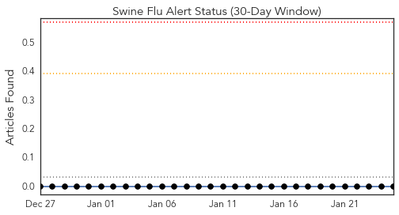
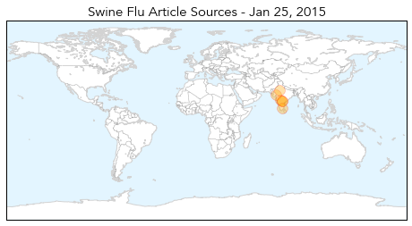
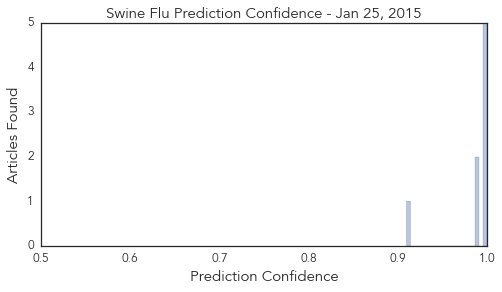
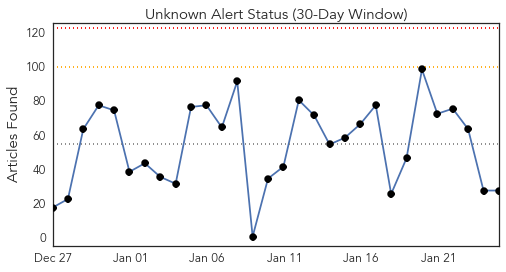
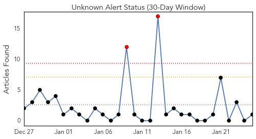
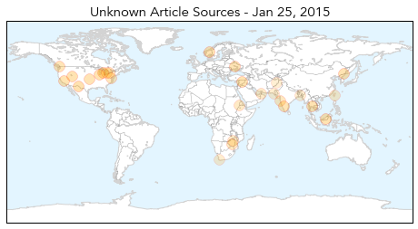
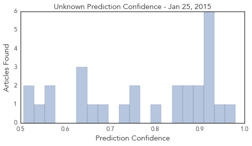

Swine Flu
30-Day Web Trend
8 alerts, 4 warnings

30-Day Twitter Trend
0 alerts, 0 warnings

Article Locations
Article Confidences
Top Articles:
- 1.000
- Read Health News & Articles at TheHealthSite.com
- 1.000
- Swine flu deaths push toll to 21, health department on high alert
- 0.999
- 49-year-old man tests positive for swine flu
- 0.997
- Ready to Take on Swine Flu, Govt Launches 24x7 Helpline
- 0.996
- 12 More Test Positive for Swine Flu, City on High Alert
- 0.990
- Swine flu vaccine makers wary about ramping up production
- 0.987
- Telangana remains on high alert for swine flu
- 0.910
- 35 fresh swine flu cases in Telangana
Top Tweets:
-
No tweets found for Jan 25, 2015
Unknown
30-Day Web Trend
0 alerts, 0 warnings

30-Day Twitter Trend
2 alerts, 0 warnings

Article Locations
Article Confidences
Top Articles:
- 0.980
- Michigan flu outbreak claims first pediatric death
- 0.944
- El Paso flu cases tripled in 2014
- 0.917
- Chicago Tribune
- 0.917
- Chicago Tribune
- 0.917
- Chicago Tribune
- 0.910
- The world windows to Thailand
- 0.910
- The world windows to Thailand
- 0.909
- Utahns with Lyme disease frustrated by illness, lack of care
- 0.896
- CDC warns of apple-borne bacteria outbreak
- 0.895
- Medics needled amid flu fears
- 0.866
- EU summons foreign ministers to emergency meeting on Ukraine
- 0.866
- U.S.-China climate deal does not put pressure on India, says Modi
- 0.856
- DK, Udupi account for 50% of malaria cases
- 0.851
- Flu vaccination is still worthwhile
- 0.805
- Mandatory flu shots: Why one N.J. hospital had 4,400 employees vaccinated
- 0.758
- Antibiotic use by travelers may add to global spread of superbugs
- 0.755
- 'Mugabe obsessed with foreign health service'
- 0.738
- Maharashtra reports 13% of new leprosy cases in country
- 0.684
- Displaced residents of North Darfur camp warn of severe water shortages
- 0.666
- Fatal pig virus outbreak slows
- 0.636
- Second phase of National Polio campaign extended
- 0.630
- Bilharzia disease rampant in Zimbabwe
- 0.629
- Bird flu outbreak cause over 2,300 people under observation in Taiwan
- 0.564
- ‘Leprosy to plague Pakistan for next 20 years’
- 0.563
- HEALTH: High Drug Prices Hamper Drug-Resistant TB Treatment
- 0.548
- Burn unit at a loss
- 0.517
- Kabul Children's Hospital Faces Overcrowding
- 0.507
- Travelers taking antibiotics may be helping spread of 'superbugs'
Top Tweets:
- 0.752
- RT: Lo que pasó en Miami tiene un significado muy simbólico!Todos a promover la cultura de la bicicleta en todo el mundo. ht…